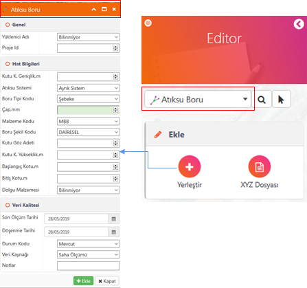

ODAGIS+ Web arayüzünde Editör Panelinden coğrafi obje veri girişi ve güncelleme işlemleri oldukça pratik bir şekilde yapılabilmektedir. Aktif Coğrafi tabaka seçildikten soran Ekle, Sil ve Güncelleme bölmelerinin altında yer alan komutlarla işlemler gerçekleştirilmektedir.
Editör arayüzünde veri girişi ve güncelleme yapabilmek için ön şart, ilgili coğrafi tabakayı seçerek aktif hale getirmektir. Seçim işlemi seçme kutusundan veya sağ taraftaki seçim butonundan yapılmakta olup, aktif tabakanın özelliği (nokta, çizgi veya çokgen) sol tarafında dinamik olarak gösterilmektedir.
Seçme kutusunda aktif bulunan coğrafi tabakanın ekranda gösterilmesi veya değiştirilerek ekrandaki tabakanın kaldırılması görevleri yerine getirilmektedir.
Yerleştir [Obje(ler)] :
Bu komut vasıtasıyla aktif hale gelen veri girişi formundan bir elemente ait geometrik(nokta, çizgi, çokgen) ve sözel(attribute) bilgi girişi yapılmaktadır. Bu komutla geometrik bir element sözel bilgileri ile birlikte veritabanına girilebilmekte, "akıllı" bir obje oluşturulmaktadır. Bu veri girişleri Yönetici arayüzünde ayarlanabilmekte, kullanıcı arayüzünde kural tabanlı (gerekli, otomatik doldur, saltokunur vb.) olarak yapılabilmektedir.
Kullanımı :
Komut düğmesine basıldıktan sonra açılan "veri girişi" formunda gerekli bilgiler doldurulur ve işlem "OK" butonuna basılarak tamamlanır. Veri giriş formlarında renkli(kırmızı) alanlar mutlaka girilmesi gerekli alanları ifade etmektedir.
